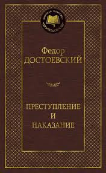

Написан и опубликован в 1866 году.
Главный герой — Родион Раскольников.
Роман поднимает темы морали, совести и ответственности.
События происходят в Санкт-Петербурге.
Это один из самых известных психологических романов.